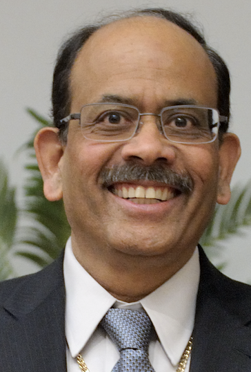

<div class="row mt-xs-0 mt-sm-0 mt-md-1 mt-lg-2 mt-xl-3 mb-xs-2 mb-sm-2">
    <div class="col conference">
        <div>
            <h4>HPDC 2024 Achievement Award</h4>

            <p>
                We are happy to announce that <b>Laxmikant (Sanjay) Kale </b> is the recipient of the 2024 Achievement
                Award in High Performance Distributed Computing.
            </p>

            <p>
                <b>Citation:</b>

                <i>For pioneering development of task-based adaptive parallel programming models and
                    runtime systems, leading to a new category of highly scalable scientific applications.</i>
            </p>

            <p>
                Dr. Kale will deliver a keynote address and be recognized at the HPDC 2024 conference in Pisa, Italy.
            </p>
            <div class="row">
                <div class="col-3 mx-auto d-flex align-items-start justify-content-center">
                    
                </div>
                <div class="col-9">
                    <p>Dr. Kale is currently Research Professor & Paul and Cynthia Saylor Professor Emeritus in the
                        Department of Computer Science at the University of Illinois. As the director of the Parallel
                        Programming
                        Laboratory, he led the development of a number of languages and systems for parallel
                        programming, most notably the Charm++ system for adaptive task based programming. Charm++
                        enabled the development
                        of highly scalable parallel applications, such as the NAMD molecular dynamics framework. As of
                        2024, his work has been cited over 42,000 times with an h-index of 69. Dr. Kale has also been
                        recognized
                        as a fellow of the ACM, a fellow of the IEEE, and received the Gordon Bell prize in 2002 and the
                        Sidney Fernbach award in 2012.
                    </p>
                </div>
            </div>
            <br>
            <div class="row mt-2">
                <div class="col text-justify conference-text">
                    <h6>Past Winners</h6>
                    <ul>
                        <li><b>2023: </b><i>Manish Parashar</i>, for pioneering contributions in high performance
                            parallel and
                            distributed computational methods, data management, in-situ computing, and international
                            leadership in
                            cyberinfrastructure and translational computer science.
                        </li>
                        <li><b>2022: </b><i>Franck Cappello</i>, for his pioneering contributions in methods, tools, and
                            testbeds
                            for resilient high performance parallel and distributed computing.</li>
                        <li><b>2021: </b><i>Rosa M. Badia</i>, for her innovations in parallel task-based programming
                            models,
                            workflow
                            applications and systems, and leadership in the high performance computing research
                            community.</li>
                        <li><b>2020:</b> No award made.</li>
                        <li><b>2019: </b><i>Geoffrey Fox</i>, for his foundational contributions to parallel computing,
                            high-performance software, the interface between applications and systems, contributions to
                            education,
                            and outreach to underrepresented communities.</li>
                        <li><b>2018: </b><i>Satoshi Matsuoka</i>, for his pioneering research in the design,
                            implementation, and
                            application of high performance systems and software tools for parallel and distributed
                            systems.</li>
                        <li><b>2017: </b><i>David Abramson</i>, for his pioneering research in the design,
                            implementation, and
                            application of high performance systems and software tools for parallel and distributed
                            systems.</li>
                        <li><b>2016: </b><i>Jack Dongarra</i>, for his long-standing and far-reaching contributions in
                            high
                            performance linear algebra and large-scale parallel and distributed computing.</li>
                        <li><b>2015: </b><i>Ewa Deelman</i>, for her significant influence, contributions, and
                            distinguished use of
                            workflow systems in high-performance computing.</li>
                        <li><b>2014: </b><i>Rich Wolski</i>, for pioneering and high-impact contributions to grid,
                            cloud, and
                            parallel computing.</li>
                        <li><b>2013: </b><i>Miron Livny</i>, for his significant contribution and high impact in the
                            area of
                            high-throughput computing.</li>
                        <li><b>2012: </b><i>Ian Foster</i>, for his initiative in the creation and development of grid
                            computing and
                            his significant contributions to high-performance distributed computing in support of the
                            sciences.</li>
                    </ul>
                </div>
            </div>
        </div>
    </div>
</div>